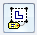

Add a drawing view caption
You can add a primary caption to a selected drawing view using the Drawing View Selection command bar.
-
Click a drawing view.
The Drawing View Selection command bar is displayed.
-
In the Caption box, type the caption text.
You can enter a combination of plain text and property text codes. You can press Enter to start a new line of text.
To view and edit all lines of text, click the arrows alongside the Caption box.
-
Click Show Caption

, and then select the following:-
From the top portion of the list, select Show Primary Caption.
-
From the bottom portion of the list, select the property text values that you want to show in the caption:
-
Show Suffix—Displays the suffix when a section view, detail view, or auxiliary view is selected, and when the %AS property text code is entered in the Caption box.
-
Show Annotation Sheet Number—Displays the sheet number where the view annotation (the cutting plane, viewing plane, or detail envelope) is located when a section view, detail view, or auxiliary view is selected, and when the %LN property text code is entered in the Caption box.
-
Show View Scale—Displays the view scale when the %VS property text code is entered in the Caption box.
-
Show Angle of Rotation—Displays the view rotation angle when the %VR property text code is entered in the Caption box.
Example:For principal and pictorial views, you may want to show the view scale and the rotation angle whenever a view is rotated. Do the following:
-
In the Caption box, type SCALE=%VS, and then press Enter to insert a blank line below it.
-
Type VIEW ANGLE=%VR.
-
From the Show Caption list, select the following:
-
Show Primary Caption
-
Show View Scale
-
Show View Rotation
-
-
-
You can use the same technique to enter or modify a caption for a view annotation. Select a cutting plane line, viewing plane line, or detail envelope, and then use the box on the command bar to type a name.
For this method to be available, the Follow object creation sequence option must be selected on the Annotation tab in the Solid Edge Options dialog box.
To learn how to automate a view annotation caption by defining it in the drawing view style, see the help topic, Define a view annotation caption.
How do I
Define caption content using property textDefine caption appearance
Learn more
View annotation edit handlesWorking with drawing captions
Automating captions
Modifying captions
Showing and hiding caption content
Quick links
View annotation captionsDefine a view annotation caption
Drawing view styles
Drawing view style workflow